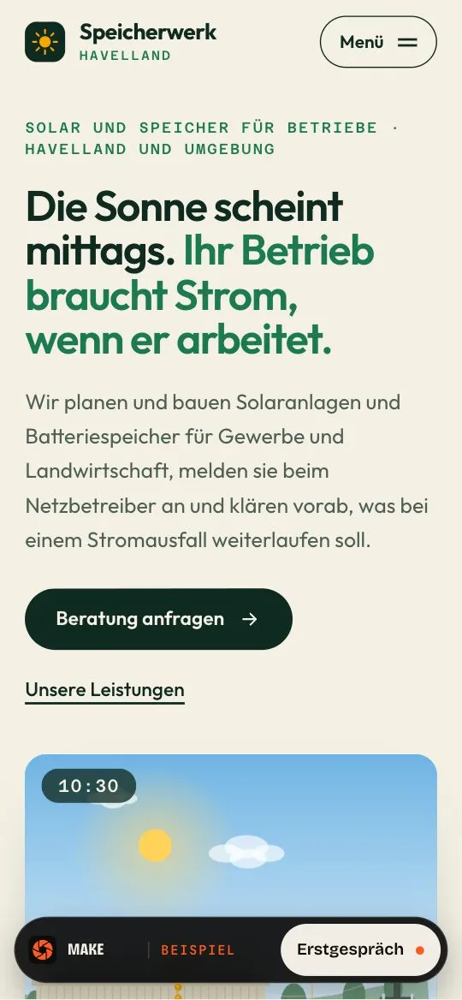

Beispiel · erfundener Betrieb
Website für Solar und Energiespeicher erstellen lassen: die Beispielseite Speicherwerk Havelland
Solaranlagen und Batteriespeicher brauchen Erklärung, bevor jemand anfragt. Wenn Sie als Fachbetrieb für Solar und Energiespeicher eine Website erstellen lassen möchten, zeigt diese Beispielseite für einen erfundenen Betrieb, wie Technik zum Ausprobieren statt zum Behaupten aufgebaut wird.
Ein Fachbetrieb für Solaranlagen und Batteriespeicher, der Technik erklärt, statt sie zu behaupten: Man fährt einen Tag mit einem Regler durch, sieht, wann erzeugt, verbraucht und gespeichert wird, und legt selbst fest, was bei einem Stromausfall weiterlaufen soll.

Welche Aufgabe löst die Seite?
Beim Thema Speicher und Solar fragen Betriebe zuerst, ob es sich lohnt und was bei einem Stromausfall passiert. Die Seite beantwortet das nicht mit Versprechen, sondern lässt Besucher einen Tag durchfahren und selbst festlegen, was weiterlaufen soll.
Was enthält die Seite?
- Tag zum Durchfahren
- Stromausfall-Auswahl
- Ohne erfundene Zahlen
Warmes Papier, tiefes Waldgrün und ein Sonnengelb, gesetzt in einer runden Grotesk mit Mono-Beschriftungen. Der Einstieg ist eine gezeichnete Szene: Mit einem Regler fährt man durch den Tag und sieht, wie Sonne, Halle, Speicher und Netz zusammenspielen, mit und ohne Speicher. Es folgen vier Leistungen, die Auswahl „Was darf bei einem Stromausfall nicht stehen bleiben?“, der Ablauf in fünf Schritten mit dem Hinweis zur Förderung, Felder für Anlagen und Nachweise, fünf Fragen und die Anfrage. Alle Bilder sind gezeichnete Illustrationen ohne Messwerte.
Wie jede unserer Seiten ist sie zuerst für das Handy gestaltet und lädt schnell.
Für wen passt so eine Seite?
Für Installationsbetriebe, Energieberater und Anbieter von Solar-, Speicher- und anderer Gebäudetechnik, deren Produkt erklärungsbedürftig ist und die Anfragen von Betrieben mit konkretem Anlass bekommen wollen.
Häufige Fragen zur Website für Solar und Energiespeicher
Wie erklärt man, ob sich ein Speicher lohnt, ohne Zahlen zu versprechen?
Man lässt es durchspielen. Auf der Beispielseite Speicherwerk Havelland fährt der Besucher mit einem Regler durch einen Tag und sieht, wie Sonne, Halle, Speicher und Netz zusammenspielen, mit und ohne Speicher. Es sind keine Messwerte, sondern eine Illustration.
Wie wird das Thema Stromausfall behandelt?
Als Auswahl: „Was darf bei einem Stromausfall nicht stehen bleiben?“ Besucher legen selbst fest, was ihnen wichtig ist. Das macht die Anfrage konkreter.
Wie geht die Seite mit dem Thema Förderung um?
Der Ablauf enthält einen Hinweis dazu. Bedingungen ändern sich, deshalb nennen wir keine Beträge und verweisen auf die zuständigen Stellen. Den aktuellen Stand prüfen Sie.
Wohin gehören Anlagen und Nachweise?
In einen eigenen Abschnitt mit Feldern für Ihre Anlagen und Nachweise. Die Beispielseite hält Platz dafür bereit. Eingetragen wird nur, was belegt ist.
Wie läuft die Beratungsanfrage ab?
Über eine Anfrage nach dem Ablauf in fünf Schritten. Sie fragt, was für ein erstes Gespräch nötig ist. In der Beispielseite sendet sie nichts.
Wie entsteht Ihre eigene Seite?
In sechs Schritten: Briefing, Design, Feedback, Umsetzung, Abnahme, Live. Sie sehen den Entwurf, bevor wir bauen, und online geht die Seite erst mit Ihrem Okay. Zum Ablauf
Websites gibt es ab 2.990 € netto, einmalig. Alle Preise finden Sie bei MAKE Innovation: Alle Preise. Mehr zu Video und Reels und zu Social Media steht auf der Startseite.
Stand: November 2026